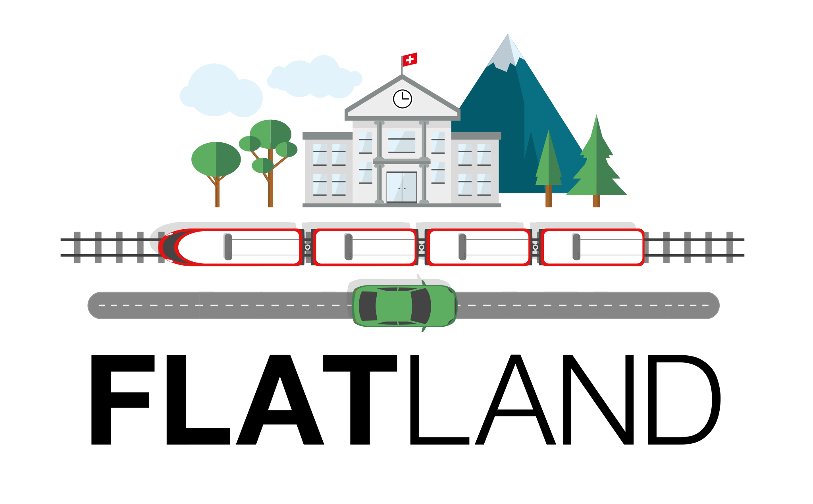
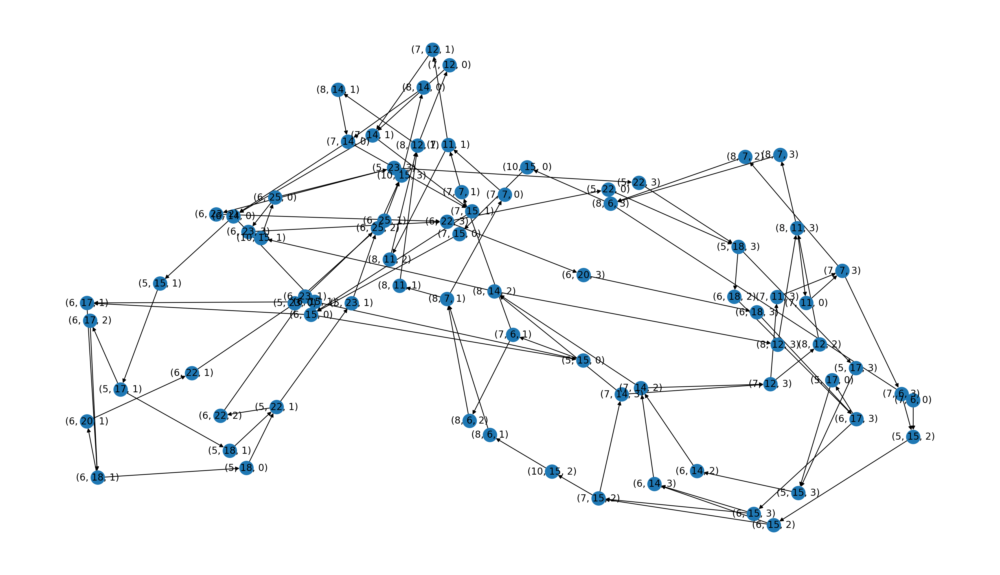
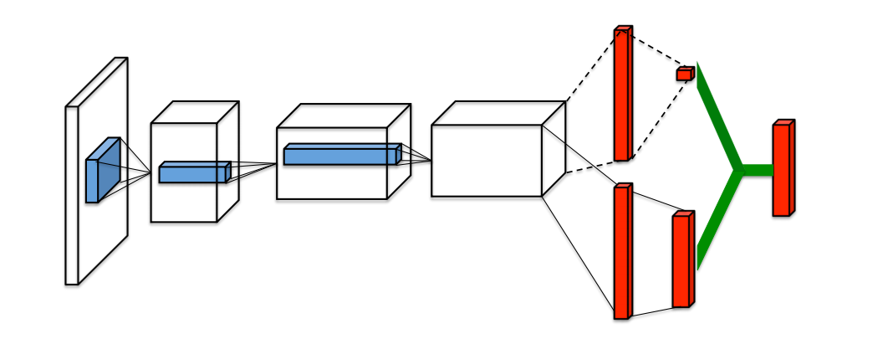
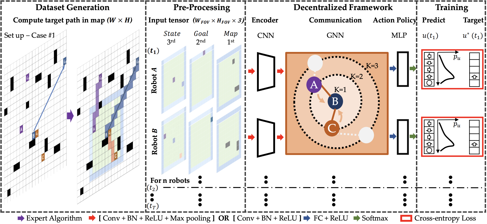

Tackling the Flatland challenge

Introduction
The Flatland challenge is a competition organized by AIcrowd and sponsored by SBB (Swiss Federal Railways), with the goal of fostering innovation in the train re-scheduling problem.
The scope of the challenge can be summarized as follows: given a set of trains positioned on a $H\times W$ grid, the task is to make each agent arrive at its assigned target, while also minimizing the cumulative traveling time.
As you may have noticed, I defined the problem a as re-scheduling one (with the re prefix), because there is a very high chance that an offline type of plan (meaning that one path for each agent is computed before they even enter the environment) may not work as expected. In particular, the Flatland environment introduces different types of complications:
- Trains can travel at different speeds, so that, for example, slower agents must learn to step back and stand still when faster ones decide to surpass them
- Trains can suffer from malfunctions, so that they would figure as out of order for a random number of steps (in a pre-determined range), thus potentially blocking other agents from reaching their targets
Even though the complications listed above are not to be taken lightly, there’s another intricacy which may not be evident at first: whenever two or more trains end up in the same straight rail, looking towards opposite directions, an unrecoverable situation might happen: the dreaded deadlock.
The worst thing about deadlocks is that, unlike malfunctions, once they happen there’s no going back: at least two agents would be completely unable to reach their targets.
Approaches
Our solutions mostly focus on implementing custom predictors and observators. Moreover, we tried to exploit both common models, like DQNs, but also custom-made ones, like those based on GNNs. Let me explain better$\dots$
First of all, a predictor is a module which takes care of estimating where agents will be in the future, while an observator is another module which is tasked to encode the information of a state in a format which should be suitable for the component responsible for computing the best action that each agent should perform at any given time step.
Before explaining predictors and observators we have to take a step back: indeed, we decided to structure our approach from the ground up, starting from the environment itself.
Inspired by the great work in [1], we modeled the Flatland grid world as what we called a COJG (Cell Orientation Junction Graph): for each non-empty cell $(x, y)$ in the grid, at most $4$ nodes are allocated in the COJG graph, labeled as $(x, y, d)$ (where $(x, y)$ are spatial dimensions and $d\in {N,E,S,W}$ is the cardinal direction). Node $(i, j, d_1)$ is then connected to node $(k, l, d_2)$ if and only if an agent is allowed to travel from cell $(i, j)$ to cell $(k, l)$, starting looking towards direction $d_1$ and ending oriented towards $d_2$. Finally, edges are merged together whenever they connect non-junction nodes (i.e. straight rails) and the new edge is assigned a weight proportional to the number of deleted edges.

This new railway encoding allowed us to build more efficient and effective predictors and observators. In particular, we introduced a shortest/deviation path predictor, that estimates the position of an agent in future steps as follows: the agent either follows its shortest path or deviates from it. In this way, a prediction is composed by a shortest path with $s$ nodes and $m$ deviation paths (with $m \lt p$), again with the same number of nodes.
Solutions
This section presents a high level overview of the two main paths that we decided to follow in implementing our custom solutions.
Simplest and best model

The best results that we were able to obtain in the challenge were gained by leveraging a custom observator and a simple DQN model.
The mentioned observator is what we named the binary tree one: it builds a feature tensor of shape $(m+1,d,f)$, where $m+1$ is the number of paths returned by the shortest/deviation predictor, $d$ is the maximum number of hops in the COJG graph to consider and $f$ is the total amount of features for each node.
As with the standard tree observation, provided out of the box in the Flatland package, we went for carefully enginereed features to describe each node. Such features include, for example, counts related to the number of malfunctioning agents, distances to other agents, distances from targets and possible deadlocks, all considered up until the examined node in the path. The main advantage of our binary tree observator is that it is time and memory efficient, since it performs all of its computations on the optimized underlying COJG graph.
Now you may wonder where the “binary” term in its name comes from. It stems from the fact that the computed feature tensor gets shaped like a binary tree, where branches identify choices, i.e. CHOICE_LEFT and CHOICE_RIGHT. In this regard, the choice space is a reduced action space w.r.t. to the original one, cutting down the standard $5$ actions (MOVE_FORWARD, MOVE_LEFT, MOVE_RIGHT, STOP_MOVING, DO_NOTHING) to just $3$ choices (CHOICE_LEFT and CHOICE_RIGHT). If you want to know more about this action space reduction you can again refer to [1].
Finally, the binary tree observation is linearized into a fixed-size vector, which is used as input for the action estimator, i.e. a simple feed-forward DQN, which outputs one Q-value for each legal choice.
How graphs and GNNs fit into the picture

In the literature, there have been lots of promising work towards the integration of GNNs and DQNs, where experiments show great generalization results over graph-structured input data. In our experiments, we wanted to exploit all the knowledge that was already encoded in our COJG graph, mostly because the presented binary tree observator and shortest/deviation paths predictor only leverage such compact graph to gain running time and memory efficiency.
Our first try with GNNs is related to the creation of a fixed-size embedding vector to feed to a standard DQN model, by aggregating information from the $k$-hops neighbors of specific nodes in the graph. To do so, we assign simple features to the nodes, like the distance to the agent’s target and a boolean value to indicate if the cell is free or occupied. Then, the COJG structure is used directly as our GNN model and neighborhood aggregations are performed using different techniques, like GCN (Graph Convolutional Network) and GraphSAGE.
Our second try is a more sophisticated one, based on [2], which leverages a custom FOV observator, that produces an image-like tensor with different channels encoding features in a local patch around a given agent. Such tensor is then processed by a CNN network and down-scaled to a fixed size by an MLP module. Finally, these fixed-size vectors are used as features for nodes in a graph representing agents and their relations. Agents are connected in the graph if and only if they are close enough in the Flatland environment. Finally, the generated graph is used as our GNN structure and neighborhood aggregation is performed again with different strategies, like GCN and GAT (Graph Attention Network). The aggregated embedding vector (one for each agent) is then fed into the usual DQN action estimator, to obtain the best action at every time-step.
Unfortunately, none of these experiments revelead to be successful in our application, i.e. in the Flatland Challenge, but we are confident that more research on these topic could be beneficial in obtaining much better results.
Conclusion
This blog post was a very broad overview of all the work that went into the Flatland project, so that you may want to check out our GitHub repository, where you can find a detailed report, slides and code. Things that didn’t fit into this article are experiments related to more technical stuff like action selectors, Bellman operators, reward shaping, hyperparameters and more.
Flatland, and more generally MARL, is a very though problem, so that strong solutions are needed to generalize well over a wide range of environments, but we believe that research is heading in the right direction and that the integration of GNNs with standard RL models could be very beneficial.
Final disclosure
We want to be clear that we didn’t actually participate in the true Flatland Challenge competition, but we instead took part in a small contest that was organized by professor Andrea Asperti as the final project of its Deep Learning course in the Artificial Intelligence master’s degree at the University of Bologna.
References
-
[1] Wälter Jonas (2020).
Existing and novel Approaches to the Vehicle Rescheduling Problem (VRSP).
HSR Hochschule für Technik Rapperswil -
[2] Qingbiao Li, Fernando Gama, Alejandro Ribeiro, and Amanda Prorok (2019).
Graph Neural Networks for Decentralized Multi-Robot Path Planning.
arXiv preprint arXiv:1912.06095